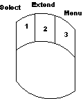
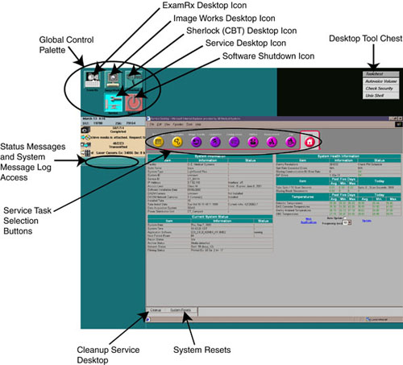
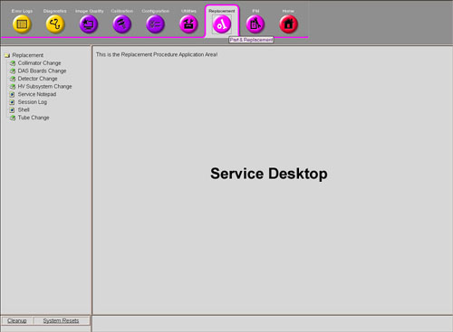
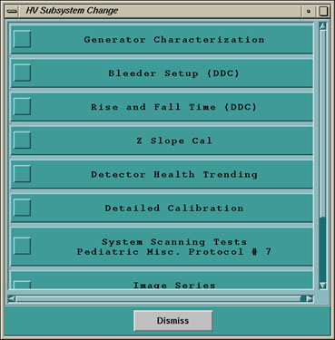
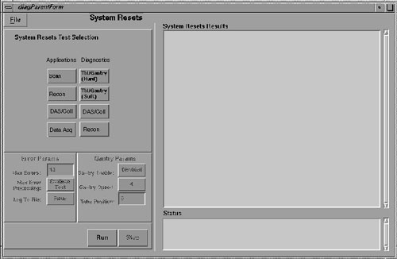
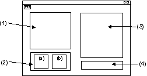
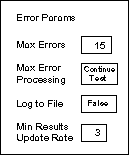
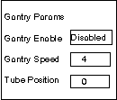

Proprietary to General Electric
Direction 5114043-800, Rev# 9
LightSpeed 3.X Service Methods (Advanced)
Proprietary to General Electric |
Use the mouse to access and operate diagnostics and tools from the right-hand display monitor, or open a shell and type/enter a UNIX command line. The system displays the Service Desktop Manager along the left-hand side of the right side display monitor (see Illustration 2).
Use the mouse to make screen selections on the service desktop.
Typical mousebutton functions:
Press mousebutton one to select.
Press mousebutton two to extend a selection.
Press mousebutton three to access pop-up menus.
Illustration 1: Mousebutton Definitions

The Service Desktop ( Illustration 2) is the entry point for all service tools and diagnostics. The desktop is designed with nine major functional menu areas each with its own purpose. These areas are:
Error Logs - Select and review system logs (see Error Log Viewing Menu - Advanced Service).
Diagnostics - Select and execute all diagnostic applications (see Diagnostics Menu - Advanced Service).
Image Quality Tools - Image quality tools not requiring communications via firmware with the system (such as image analysis and scan analysis) (see Image Quality Menu - Advanced Service)
Calibration Applications - Tools for mechanical, electrical, and imaging calibrations of the system (see Calibration Applications Menu - Advanced Service).
Configuration Applications - Save/restore system state and configuration information (see Configuration Applications Menu).
Utilities - Tools useful to the field engineer while installing or servicing a system (see Utilities Menu).
Replacement Parts/Repair Procedures - Links to tools required when replacing major field replaceable units (FRUs) (see Replacement Procedures - Advanced Service).
Planned/Preventive/Proactive Maintenance - Information to execute a PM visit (see PM Information Menu - Advanced Service).
Service Desktop Home Page - Icon descriptions and eventually system health status information.
Illustration 2: Service Desktop, Display Screen Overview

The product has five distinct desktops, one of which is the Service Desktop. The user may move between desktops with the touch of a button on the Global Control Palette, which is always visible on all desktops. When changing desktops, the palette below the Global Control Palette is replaced with the appropriate desktop specific Control Palette. Switching desktops does not modify the current view of a desktop. Even though it may no longer be visible, it is still in the same state as when the switch occurred.
The users of the Service Desktop have different needs than the technologists, radiologists, doctors, and other users of the system. Therefore, the functionality for the Service Desktop differs from that of the other desktops. Windows can be resized, iconified, overlapped, and scrolled. This allows for greater flexibility for the user, especially in the area of troubleshooting where access to many different functions may be needed at the same time.
Proprietary (Class C) software is distributed on a Class C CD-ROM, and is not part of the standard Class A/B software that is factory loaded or field installed during a software Load From Cold process. This Class C software must be loaded on the system before either the local service-person or an InSite engineer can use these proprietary tools.
Once Class C software is loaded on the system, the system grants access, if the software detects the presence of a service key (in-house, by license or GE Service), or if InSite is connected. For InSite sessions, the software enables an encrypted environmental variable and detects if the InSite user is valid. When InSite is running applications that cause table or gantry motion or enable high voltage, on-site confirmation is required before the tests are performed (see Table 1).
Table 1: Advanced Materials Access Matrix
| InSite Running? | Advanced Class C Software Loaded on the System? | |
|---|---|---|
| Yes | No | |
| Yes |
|
|
| No |
| Local Class A/B Access with or without Security Key. |
The Service Desktop controls access to the Class C software. The task selection buttons remain consistent, regardless of whether Class C software or the service key are installed. However, the tool lists displayed in the left navigational area of the Service Desktop may be different, as well as the contents of tool capabilities from the displayed list. InSite users will always see the Class C version of the Service Desktop, as long as Class C software is loaded on the system.
This section explains how to verify if a security key is present.
On a system that hasn't had a security key installed since re-boot, enter the service desktop. Click on the Service Desktop icon , if you are not already on the service desktop. The non-proprietary menus should be available.
Select the [UTILITIES] icon.
Select [TOOLS] .
Select [VERIFY SECURITY] . A shell should come up with the text “Security Hard Key is not present.”
Insert the security key.
Select [CHECK SECURITY] from the desktop tool chest menu.
Wait 15 seconds and then switch desktops.
Choose a service task selection (see Illustration 2) . The proprietary menus should now be available.
Repeat steps 2-4. The text should say “Security Level: Proprietary”. The service key's expiration date should also be posted.
| NOTE: | Security can also be verified by typing: test_check_security -v <ENTER >within an Unix shell. |
The Service Desktop contains a mixture of tools and diagnostics to be used by a Service Engineer. The main philosophy behind the user interface for the Service Desktop is to provide a procedural approach to servicing the scanner. All the necessary tools and diagnostics are available at the same time for the procedure at hand, whether it be troubleshooting, replacing a part, performing routine maintenance, or integrating the system for a new install.
Illustration 3 shows the Service Desktop Service Task selection buttons. Selecting one of the buttons at the top of the window will cause a new list to be displayed in the left-hand frame of the window. In the example shown, [REPLACEMENT PROCEDURES] has been selected, and an advanced service list, containing major items that can be installed or replaced appears. An item can be selected from this list, which then causes another screen to open. In Illustration 4, [HV SUBSYSTEM CHANGE] is selected, and the service-by-step list of tools and diagnostics for replacing and retesting the high voltage subsystem is shown. The order that the items are listed in the menu usually indicates the order the procedures would normally be completed.
The small square to the left of the menu item will change to red after the tool has been selected and exited. This can be used as a reminder as to which procedures have been run. It will remain red until the service desktop is exited or cleaned-up.
Illustration 3: Advanced Service Desktop Control Palette Example

Illustration 4: Service-by-Step Example for a HV Subsystem Change

The product goal for diagnostics is to ultimately eliminate the need to download diagnostic firmware to run diagnostics. The early product releases will have a mixture of diagnostics, where some diagnostics have been rewritten to run with applications firmware and the rest require diagnostics firmware to be loaded to the STC, OBC, and ETC. The Service Desktop strategy is to allow access to both tools and diagnostics on the same screen.
The Diagnostic major function screens are therefore organized to assist in determining when downloading of the controllers will occur (see Diagnostics Menu - Advanced Service).
Change desktops by selecting the corresponding desktop icon from the Global Control Pallet (see Illustration 2). Launch, or start each service tool or diagnostic by clicking the mouse on the tool.
The [CLEANUP] button on the bottom of the desktop cleans up any previously opened windows, and restores the desktop to its original state, rather than closing or dismissing each individual application visible on the Service Desktop. The [CLEANUP] button should be selected whenever the user is done with the Service Desktop, or whenever it is desired to return the desktops to a known state.
Illustration 5: Desk Top Management Buttons
| NOTE: | [CLEANUP] reloads applications firmware. |
If you ran diagnostics that required diagnostic firmware, the [CLEANUP] button will also reload the application firmware.
The [DISMISS] button cleans up, then returns to the Service Desktop diagnostics menu.
The [SYSTEM RESETS] button displays the reset menu for various product or application firmware.
The [SYSTEM RESETS] function allows the user to reset and download the scanner hardware as required, preparing the system for scanning operation. Access [SYSTEM RESETS] as follows:
Select [SYSTEM RESETS] from the Service Desktop (see Illustration 5). The reset applications selections include (refer to Illustration 6):
[SCAN] - Resets and downloads all controllers in the gantry and table.
[RECON] - Resets the recon subsystem (PEG-IG and RIP boards).
[DAS/COLL] - Resets the DAS control and collimator control board.
[DATA ACQUISITION] - Resets the DAS, control, collimator control, and DIP boards.
Select [RESET] from the displayed screen.
Select [RUN] .
The status box displays the status of the selected reset.
Illustration 6: System Resets Screen

Selecting a diagnostic from the Service Desktop brings up a diagnostic GUI. The diagnostic interface is broken up into four different areas: specific test control, generic test control (including error parameters and gantry parameters), test results, and test status. Refer to Illustration 7 and the descriptions that follow.
Illustration 7: Diagnostic Graphical User Interface (x-windows)

Callout numbers (1, 2, a, b, 3, and 4) from Illustration 7 include:
Specific Test Control - Use this area for selecting a test and associated parameters.
Generic Test Control - Use this area to control the error parameters and gantry parameters:
Error Parameters Area - These choices are shown in every diagnostic interface (see Illustration 8). Click on the error parameter icons to view the choices.
Max Errors - Determines the number of errors that have to occur before processing of errors is changed. Type in any number you like.
Max Error Processing - Determines what to do when the max error count has occurred. Choices are [CONTINUE THE TEST] , [STOP LOGGING ERRORS] , and [STOP THE TEST] .
Log to File - Determines if the results screen should be put into a log file titled DiagSession.log. Choices are [TRUE] or [FALSE] .
Min Results Update Rate - Determines how often the results screen section should be updated. Any faster than three seconds is difficult to read.
Gantry Parameters Area - Defines what you want the gantry to do during a diagnostic, and is available for most tests (see Illustration 9). It is useful for reproducing errors that occur only when the gantry is rotating. Click on the gantry parameters icons to view the available choices.
Gantry Enable/Disable - Determines what to do with the gantry during the test. Choices include [DISABLE] , [POSITION] , and [ROTATION] .
Gantry Speed - Determines how fast to rotate, if rotation has been selected. Choices are [1] , [2] , [4] , or [20] seconds per rotation.
Tube Position - Moves the tube to the position entered.
Test Results Area - View the output results of the specific diagnostic here.
Test Status Area - View the status messages, such as Start, Stop, and Test Aborted, here.
Illustration 8: Error Parameters

Illustration 9: Gantry Parameters
